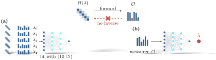

Advanced Quantum Materials 2027 · All lectures · Lecture notes
Session 10. Machine Learning Quantum Materials
10.8 Closing summary

A deep neural network is a parametric function that is trained by minimizing a loss function with gradient descent, equation (10.1). Every other construction in this session is a specific choice of input, output and loss built on top of this one template.
Neural network quantum states replace the explicit storage of the \(2^L\) coefficients of a wavefunction with a network \(C_\theta(s)\), equation (10.2), which is trained by using the variational energy as the loss function, equations (10.3)-(10.5). NNQS is above matrix product states and PEPS in the variational hierarchy, and it imposes the least structure of all the ansätze of this course. The same ansatz, fitted by maximum likelihood instead of energy minimization, solves quantum state tomography with far fewer than \(2^L\) measurements.
Tensor networks, built from the matrix product state ansatz (10.6) and its generalizations to trees, MERA and PEPS, can be used in the reverse direction as machine-learning architectures. For image classification on Fashion-MNIST, this reaches 95.38% training accuracy and 88.97% test accuracy, which is comparable with conventional neural networks.
Density functional theory is based on the Hohenberg-Kohn functional (10.7) and the Kohn-Sham self-consistency loop (10.8). Machine learning enters in two ways. It can learn the unknown exchange-correlation part of (10.8), and then the self-consistency loop stays the same, or it can learn the whole map from potential to density directly, and then the self-consistency loop is removed completely.
Phase classification uses one more time the split of this course between local order parameters and topological order. The Ising model (10.9) is the easy case, which can be detected locally and follows the logic of sessions 1, 5 and 6. The Ising gauge theory (10.10) is the hard case, where no local order parameter distinguishes the low-temperature and high-temperature regimes, which are separated only by a crossover, and it follows the logic of sessions 3 and 4. A trained network succeeds where the naive order parameter fails.
Hamiltonian learning treats the inference of a Hamiltonian from measured observables, equation (10.11), as the inverse of the first step of session 1. We train a network on synthetic forward data, equation (10.12), and apply it to real experimental observables, and in this way we close the loop in practice and not only in principle.
We started this course by asking how a small number of identical atoms, arranged in a lattice, can give rise to a phenomenology as rich as the one that we studied in ten sessions. This includes charge density waves, magnets, superconductors, topological insulators, fractional excitations, spin liquids and more, and none of it can be seen in a single atom alone. To answer this question we went through second quantization and mean-field theory, through Bloch’s theorem and topological invariants, through Nambu spinors and magnon spectra, through tensor networks and parton constructions, and through linear response as a diagnostic for all of them. This session closed the arc in two ways. First, it showed that a neural network can take the place of the many-body wavefunction itself. Second, it showed that all the forward methods of the course, with a Hamiltonian as input and an observable as output, can be run backward to infer the Hamiltonians of real materials. This is a good place to end the course, not with a final answer, but with a general method to ask the question again, for the next quantum material that we want to understand.
Which choices define every construction of this session, from the cat-and-dog classifier to the neural network quantum state?
Show the answer
The correct option is B.
The neural network quantum state uses a spin configuration, a coefficient and the energy. The phase classifier uses a spin array, a one-hot label and the loss of (10.1). The training step is the same in every case.